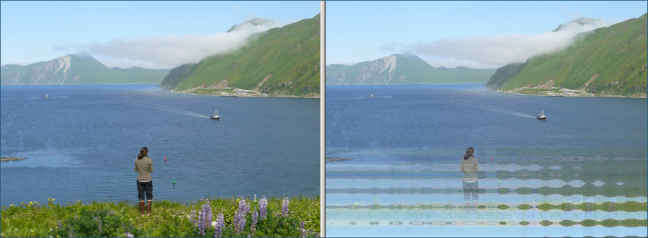

Artistic Effect: Water Reflections
Previous
Top
Next
The Water Reflections effect makes the photo appear to be reflected off water, with transparency concentrated at the bottom or top of the photo. You can specify the amplitude and frequency of the simulated water waves.
